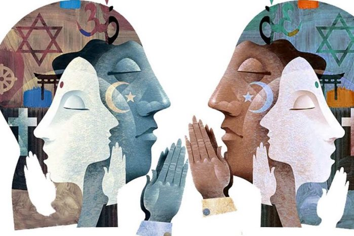

Mental and physical health
- As detective you discover how peoples religeon is greatly linked to the mental and physical health of that person.
- While several studies where inconsistent in thier findings Emily A. Greenfield and Nadine F. Marks explain how,"Given the lack of previous empirical attention to social identity within the literature on religiosity and mental health, these findings contribute to our understanding of self, religion, and health, while also pointing to the importance of continuing to draw on well developed social psychological theory in investigations of linkages between religion and health."
- Using this evidence you have found a clue of how religeon can have a positive effect on mental and phisical health.

Religeon's affect on identity
- Emily A. Greenfield and Nadine F. Marks explain how, "several researchers have found religiosity to be related to how people perceive themselves in relation to others."
- Several studies have shown how formal religious participation lead to more positive self concept.
- Emily A. Greenfield and Nadine F. Marks explain how,"social identity theory offers a rich theoretical foundation from which to explore linkages between religion and identity, only a small body of literature has focused attention to associations between religiosity and various aspects of self."
The Midnight thief
Late in the night you hear a knocking on your office door. A shopkeeper enters the room and asks if he may file a complaint. You ask him what the problem is and he beggains his tale. After examining the case for a few days you have come up with 2 remaining suspects. You interpret each suspect and ask very specific questions. One question was if the suspects considered themselves religeous. One answered yes but had a weak meantal and phsical state. The other suspect answered no and also had a weak mental and phsical state. Which suspect is most likley lying based on the information about identity and religeon?
Do Morals Define Your Identity?
Heiphetz L, Strohminger N, Young LL. The Role of Moral Beliefs, Memories, and Preferences in Representations of Identity. Cogn Sci. 2017 Apr;41(3):744-767. doi: 10.1111/cogs.12354. Epub 2016 Mar 3. PMID: 26936631 Accessed 7 May 2021.How Morals affect identity
- Morals are nearly as important as religion when seeing it’s effects on identity.
- Three studies were conducted to see if moral beliefs change would the person's identity change.
- As NCBI explains, “People perceive that if their memories and moral beliefs changed, they would change.”